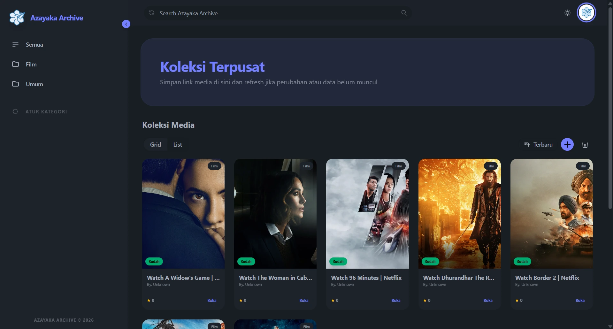
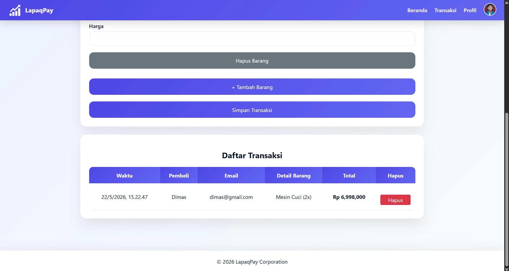
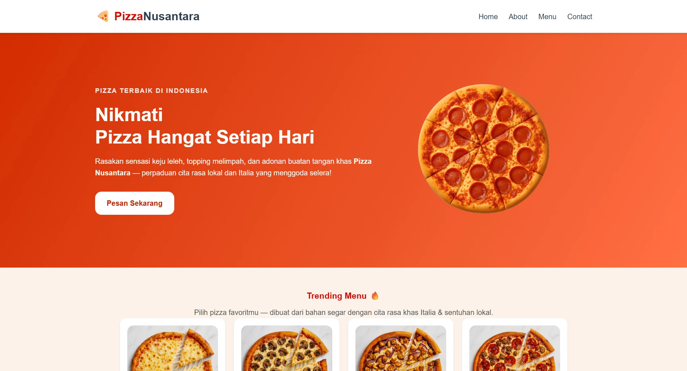
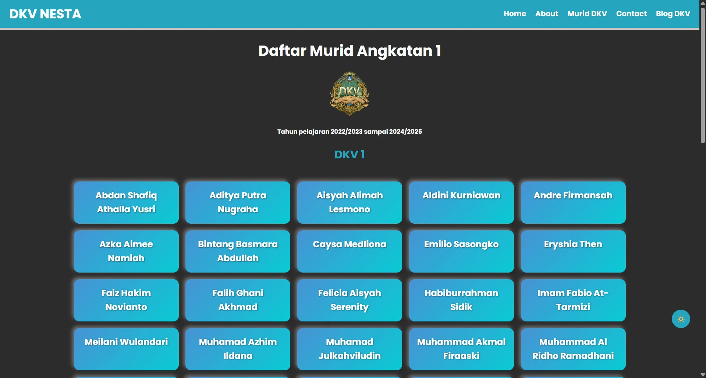
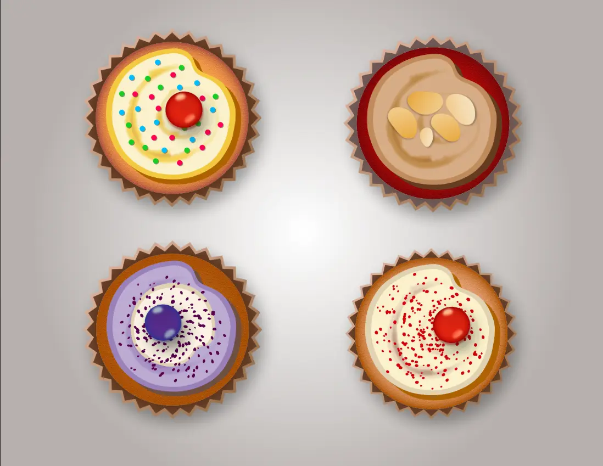
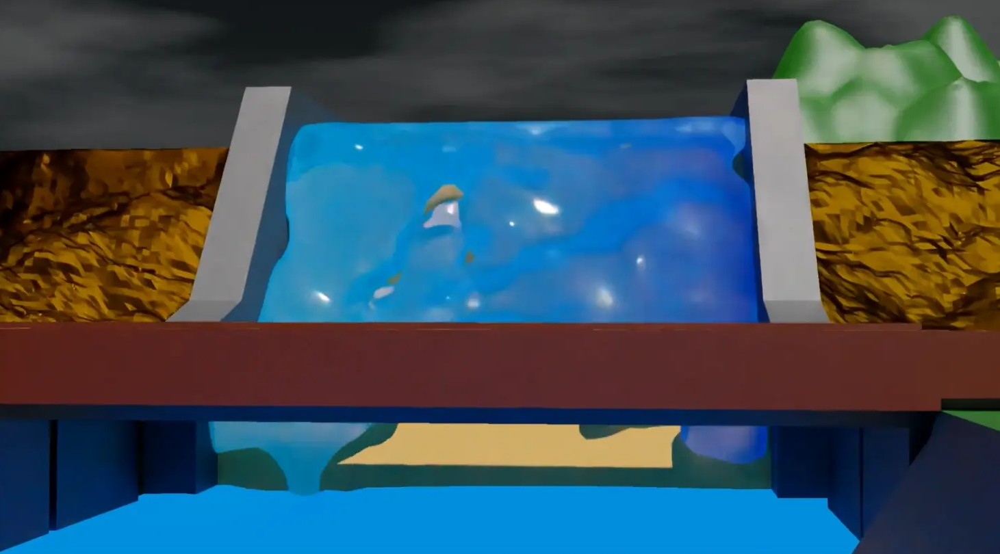
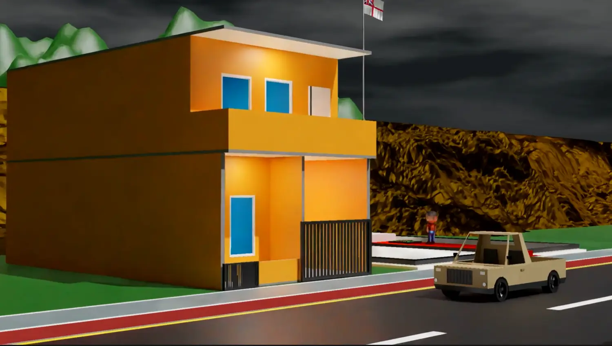

Reza Ahmad Al Ghifari
Digital Marketing • Desain Grafis • Web Developer
Lulusan Desain Komunikasi Visual yang kreatif, disiplin, dan cepat beradaptasi. Memiliki pengalaman dalam desain visual, pemasaran digital, serta analisis data. Terbiasa mengelola konten digital dan mengoptimalkan performa melalui pendekatan berbasis data. Saat ini melanjutkan pendidikan di bidang Sistem Informasi untuk memperkuat kemampuan teknologi dan analisis.
Tentang Saya
Saya adalah individu yang memiliki ketertarikan pada pengembangan digital, khususnya dalam bidang desain visual, pemasaran digital, dan pemanfaatan data untuk meningkatkan performa konten. Terbiasa bekerja secara terstruktur, adaptif terhadap perubahan, serta memiliki komitmen dalam menghasilkan pekerjaan yang efektif dan berdampak.
Pendidikan
S1 Sistem Informasi
Universitas Pamulang (2025 - Sekarang)
Desain Komunikasi Visual
SMK Negeri 1 Tangerang (2022 - 2025)
Pengalaman Kerja
Digital Marketing
PT Sariling Aneka Energi (Jul 2024 - Des 2024)
- +30% visibilitas melalui SEO
- +25% CTR dari desain thumbnail
- +20% engagement konten
- Analisis data & riset kompetitor
- +15% peningkatan penjualan
Skill
Hard Skills
Soft Skills
Sertifikasi & Pelatihan
Project Website
Kumpulan project website statis dan dinamis yang saya kerjakan dengan fokus pada tampilan modern, performa, dan pengalaman pengguna.

Web untuk mencatat media seperti film dan novel yang telah ditonton dengan mudah dan cepat.
Berita AI
Website berita otomatis berbasis AI untuk menghasilkan headline, artikel, dan kategori berita.
Catatan Rahasia
Web penyimpanan catatan pribadi dengan fitur keamanan dan tampilan minimalis modern.

Website pencatatan transaksi sederhana dengan UI modern dan pengalaman pengguna yang ringan.

Website kuliner dengan branding lokal dan tampilan visual modern untuk promosi makanan.

Website tugas desain komunikasi visual dengan fokus layout, tipografi, dan estetika modern.
Multimedia Projects
Kumpulan karya multimedia mulai dari desain grafis, visualisasi 3D, motion graphic, hingga editing video yang dibuat untuk eksplorasi kreativitas digital, branding visual, dan kebutuhan konten modern.

Desain Grafis
Branding & Visual Content
Kumpulan project visual kreatif mulai dari branding, poster promosi, social media design, ilustrasi, hingga kebutuhan visual modern untuk media digital.

3D Modelling
Environment & Hard Surface
Project modelling 3D untuk visualisasi environment, arsitektur, hard surface asset, prop design, hingga simulasi visual cinematic dan game-style scene.

Video & Foto Editing
Cinematic & Creative Editing
Project editing kreatif untuk cinematic video, color grading, AMV editing, logo animation, beat sync editing, hingga visual motion modern untuk social media dan kebutuhan promosi digital.
Desain Grafis
Photoshop · Illustrator · Canva · Inkscape · Corel Draw
3D Modelling
Blender · Cycles / Eevee · Sketchfab embed
Video & Foto Editing
CapCut · Blender · YouTube / Vimeo embed


Color Grading
Eksplorasi tone cinematic, mood visual, dan manipulasi warna untuk menghasilkan nuansa visual yang elegan.
Blog & Artikel
Sudut pandang independen seputar Game, Otomotif, Militer, dan Teknologi. Dirancang sebagai bagian dari Azayaka Rialta .
Artikel Terbaru
6 Postingan